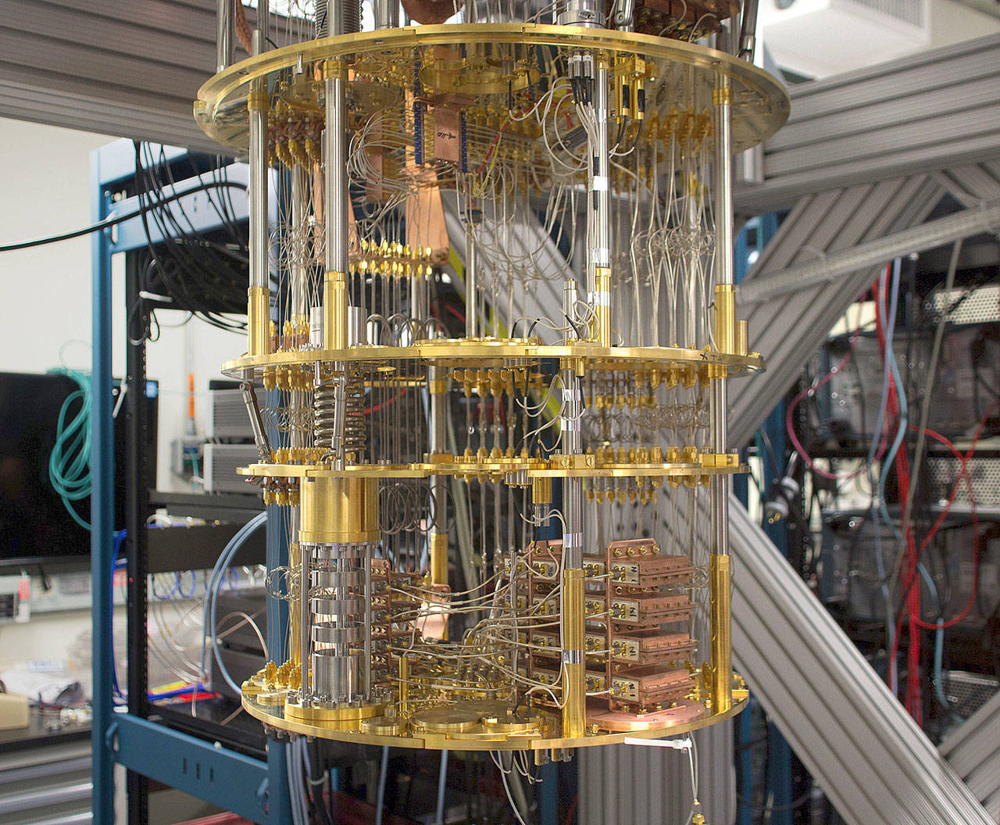

Discover
IBM is one of the world’s leading quantum computing research companies. Its initiative and dedication to building commercially available universal quantum computers for business and science, along with its amazing research department, has lead IBM a long way along the path of quantum supremacy.

IBM has recently built and measured a 50 qubit prototype processor. This leading innovation may make IBM take the lead in the world quantum infrastructure in the years to come. [1]
IBM believes that very soon they will achieve quantum supremacy/advantage very soon. [2]
Here’s how they do it:
-
Quantum lab: IBM was Inspired by nature and the laws of quantum mechanics, and they believe that quantum computing is the future. It has the potential to solve challenges that are out of reach of today’s classical computers. On May 4, 2016, IBM Research announced that it is making quantum computing available to the public. Through the IBM Quantum Experience anyone can create algorithms and run experiments on quantum processors located in IBM labs. [3]
-
IBM Q is an industry-first initiative to build commercially available universal quantum computing systems for business and science. Today, IBM has a sophisticated prototype commercial quantum processor that will form the core of the first IBM Q early-access commercial systems for clients. In collaboration with key industry partners, IBM intends to significantly increase the computational capability of future quantum systems and demonstrate computational capabilities beyond today’s classical computing systems. [4]
-
IBM has been so successful for a very simple reason: open source! They have allowed developers to access the quantum computers through IBM cloud and run experiments on them. All the code developers work on is public on GitHub! This has led to great innovation since researchers can run algorithms and experiments, and to collaboratively explore what might be possible with quantum computing.
-
Recently IBM introduced QISKit. This is a Python interface to allow Developers to interact with IBM Quantum experience. This interface enables you to work with quantum circuits and executing multiple circuits in an efficient batch of experiments [5]
BIBLIOGRAPHY
[1] IBM-Q Network
[2] Getting Quantum Ready
[3] IBM-Q
[4] What is IBM-Q
[5] QISKit